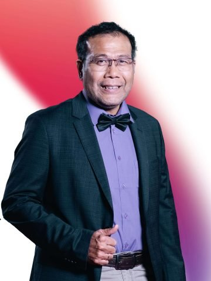

Dr. dr. Todung Donald Aposan Silalahi, Sp.PD-KKV, FINASIM, FICA, FAPSIC, FACC, FSCAI
Konsultan Kardiologi IntervensiMemegang fellowship dari American College of Cardiology (FACC), Society for Cardiovascular Angiography and Interventions (FSCAI), dan Asian Pacific Society of Interventional Cardiology (FAPSIC). Kompetensinya di kateterisasi dan pemasangan ring diakui di tingkat global.
Riwayat pendidikan
- 2016: Program Doktoral, FK Universitas Indonesia
- 2011: International Program in Interventional Cardiology, Seoul National University Hospital, Korea
- 2009: Spesialis II (Sp.2) Kardiologi, FK Universitas Indonesia
- 2003: Spesialis Penyakit Dalam, FK Universitas Sumatera Utara
- 1987: Dokter Umum, FK Universitas Sumatera Utara
Jadwal praktik
SaharjoRab, Kam — 08.00-12.00
Keahlian terkait
PCI dipandu IVUS/OCTPCI kompleks (Rotablator, OAS)Pacu jantung & ICDTerapi resinkronisasi (CRT)Holter